Contents
clear; clc; close all; tau_m = 0.025; % time delay given in seconds H = tf(20,[1 0],'IOdelay',tau_m); w = logspace(0,3); [m,f] = bode(H,w); mm(1,:) = m(1,1,:); ff(1,:) = f(1,1,:);
Ploting the magnitude characteristics:
is not changed with a time delay
subplot(2,1,1); semilogx([1 10 20 1e2 1e3], [26 6 0 -14 -34], 'g', 'LineWidth',2); grid; hold; semilogx(w,20*log10(mm),'k'); legend('matlab characteristic','appproximation by assymptotes'); title("Magnitude characteristic", 'FontSize',18); hold
Current plot held Current plot released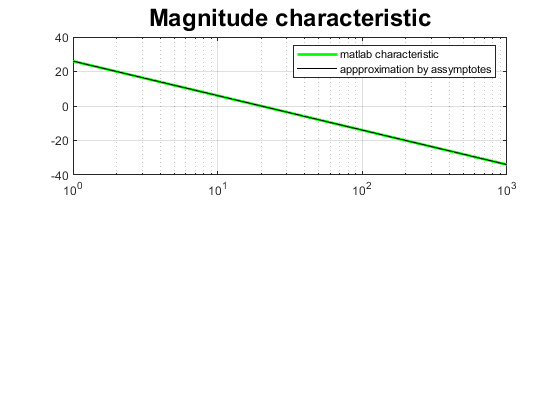
Ploting the phase characteristics:
subplot(2,1,2); semilogx(w,ff,'g', 'LineWidth',2); hold wtm = 1/tau_m; %frequency of interest for time delay semilogx([0.25 0.5 1 2 4]*wtm, -90-180/pi*[0.25 0.5 1 2 4],'*k-'); semilogx([0.25 0.5 1 2 4]*wtm, -180/pi*[0.25 0.5 1 2 4],'ok-'); info={'$\omega=\frac{0.25}{\tau_m}$','$\omega=\frac{0.5}{\tau_m}$','$\omega=\frac{1}{\tau_m}$','$\omega=\frac{2}{\tau_m}$','$\omega=\frac{4}{\tau_m}$'}; text([0.25 0.5 1 2 4]*wtm, -57*[0.25 0.5 1 2 4] + 15, info,'color','k','interpreter','Latex','FontSize',8); hold legend('matlab characteristic','5 points approximation','-\tau_m\omega', 'Location','southwest') axis([1,1e3,-360,10]);grid set(gca,'YTick',[-270,-180,-90,0]);shg
Current plot held Current plot released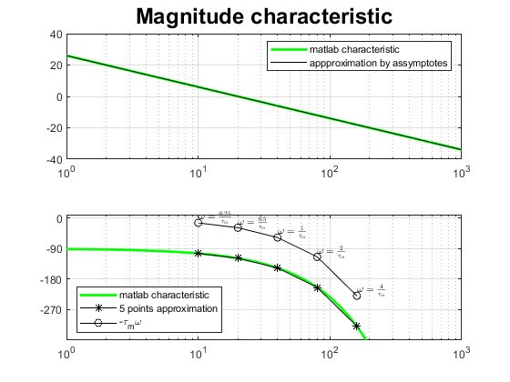
Ploting the nyquist for H
figure nyquist(H)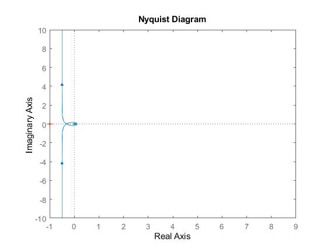
k = 1;
tau_m = 0.2;
H =tf([-0.5 1]*k, [1 0],'IOdelay',tau_m);
wmin = -1;
wmax = 2;
w = logspace(wmin,wmax,1e4);
figure;
nyquist(H,w)
shg;
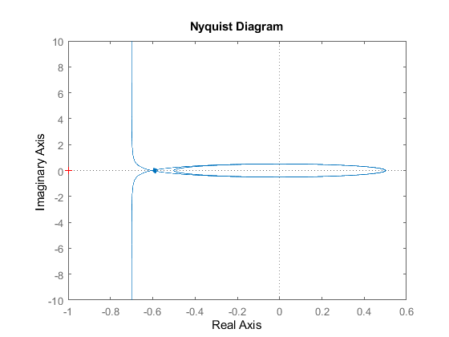 Designing a proportional controller for
obataining a closed loop stables ystem:
%Answer: %We have to find the critical point(in which the nyquist plot crosses the real axes for the first time) %If we need to choose k in such a way that if whe change k the critical %point will be smaller than -1 radius, real{pc}*k should be < -1; where pc %is the critical point, that means that k should be between 0 and %1/real{pc} for a closed loop stbale system.
a)
tau_m = 1/8; H =tf(10, [1 3],'IOdelay',tau_m); wmin = -2; wmax = 2; w = logspace(wmin,wmax,1e4); figure; nyquist(H,w) shg; % k should be between (0,1/5.09) to be (remain) closed loop stable;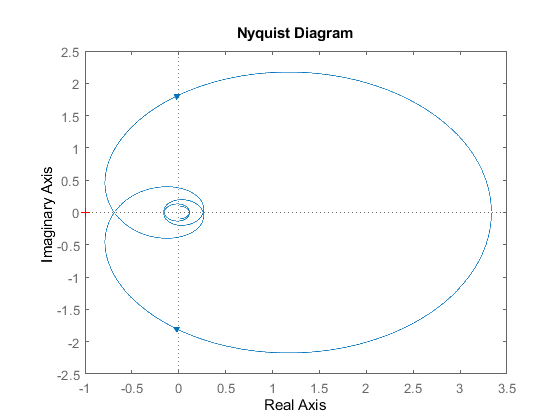
b)
k = 1/1.8;
H =tf([1 900]*k, [1 500]);
wmin = -2;
wmax = 2;
w = logspace(wmin,wmax,1e4);
figure;
nyquist(H,w)
% k should be between[1.8, inf) to be (remain) closed loop stable;
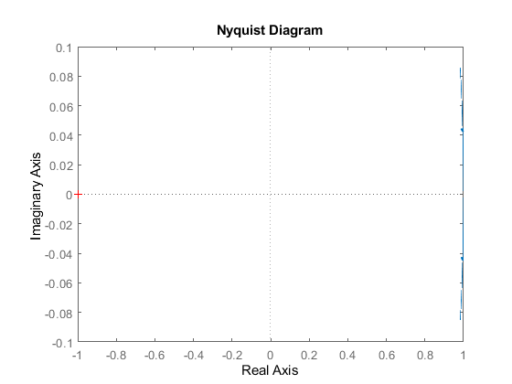 c)
k = 1e11;
H =tf([1 -9e-6]*k, [1 5e6]);
wmin = -2;
wmax = 2;
w = logspace(wmin,wmax,1e4);
figure;
nyquist(H,w)
% k should be between(0, 1e12) to be (remain) closed loop stable;
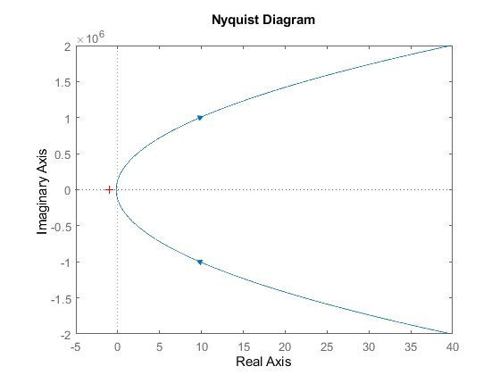 d)
k = 1/0.5;
H =tf([1 9]*k, [1 -5]);
wmin = -2;
wmax = 2;
w = logspace(wmin,wmax,1e4);
figure;
nyquist(H,w)
% k should be between (1/1.8, inf) to be (remain) closed loop stable;
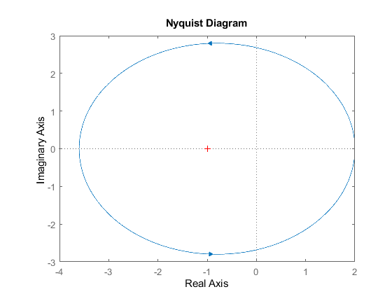 e)
k = 0.0001;
H =tf([-1 9]*k, [1 5]);
wmin = -2;
wmax = 2;
w = logspace(wmin,wmax,1e4);
figure;
nyquist(H,w)
% k should be between (0, 1) to be (remain) closed loop stable;
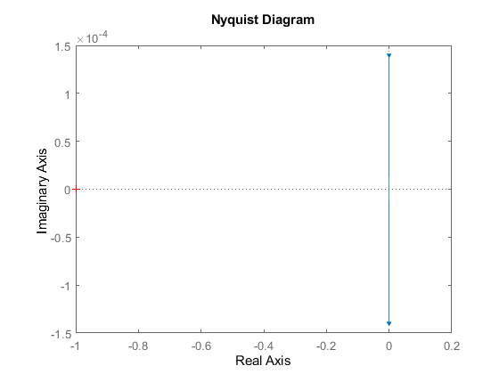 f)
k = 1;
H =tf([1 9]*k, [-1 5]);
wmin = -2;
wmax = 2;
w = logspace(wmin,wmax,1e4);
figure;
nyquist(H,w)
% k should be between (1, inf) to be (remain) closed loop stable;
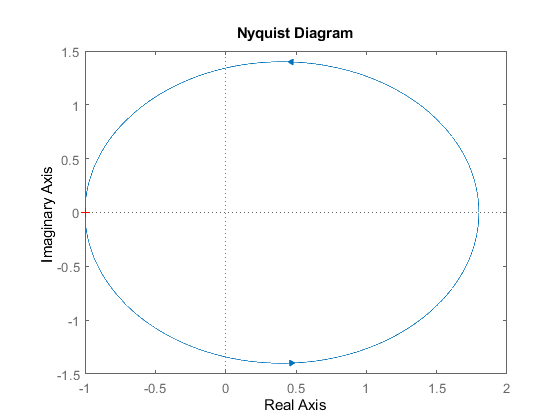 g)
k = 1/1.79;
H =tf([-1 9]*k, [1 -5]);
wmin = -2;
wmax = 2;
w = logspace(wmin,wmax,1e4);
figure;
nyquist(H,w)
% k should be between (1/1.8, 1) to be (remain) closed loop stable;
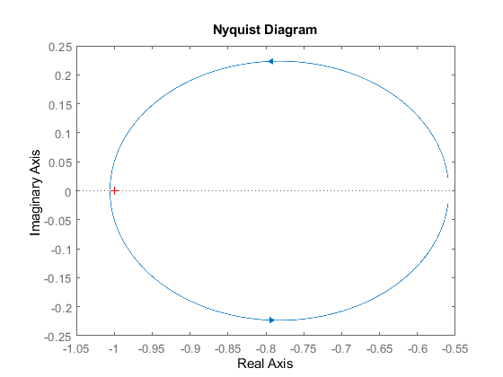 h)
k = 1;
H =tf((1)*k, conv([1 1 0], [1 4]));
wmin = -2;
wmax = 2;
w = logspace(wmin,wmax,1e4);
figure;
nyquist(H,w)
% k should be between (1, 20) to be (remain) closed loop stable;
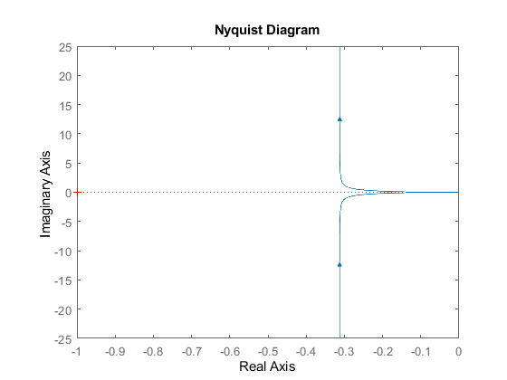